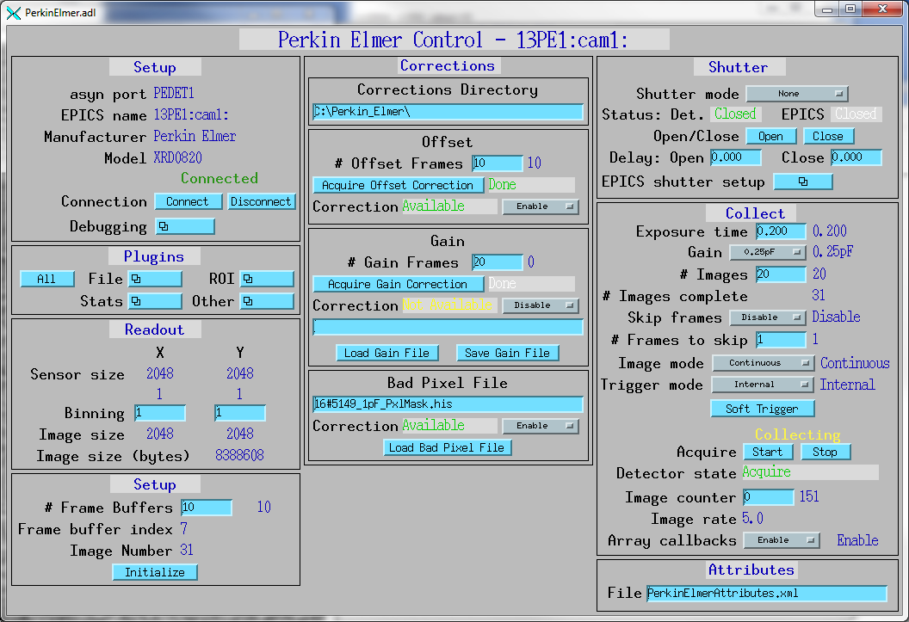

ADDexela
AreaDetector Dexela driver
- author:
Mark Rivers, University of Chicago
Introduction
This is an areaDetector driver for the flat-panel CMOS detectors from Perkin Elmer.
The driver is based upon the Dexela library provided by Perkin Elmer. It only runs on Microsoft Windows computers. It supports both 32-bit and 64-bit versions of Windows.
This driver has been tested with the following detectors
Dexela 1512 with CameraLink frame grabber
This driver inherits from ADDriver. It implements many of the parameters in asynNDArrayDriver.h and in ADArrayDriver.h. It also implements a number of parameters that are specific to the Dexela detectors. The Dexela class documentation describes this class in detail.
Implementation of standard driver parameters
The following table describes how the Dexela driver implements some of the standard driver parameters.
Implementation of Parameters in asynNDArrayDriver.h and ADDriver.h, and EPICS Record Definitions in ADBase.template and NDFile.template |
||
|---|---|---|
Parameter index variable |
EPICS record name |
Description |
ADNumImages |
$(P)$(R)NumImages |
Controls the number of images to acquire when ADImageMode is Multiple |
ADAcquireTime |
$(P)$(R)AcquireTime, $(P)$(R)AcquireTime_RBV |
When using Internal Triggers, this parameter controls the period between trigger pulses which will also be equal to the exposure time. |
ADTriggerMode |
$(P)$(R)TriggerMode, $(P)$(R)TriggerMode_RBV |
Sets the trigger mode for the detector. Options are:
|
Dexela specific parameters
The Dexela driver implements the following parameters in addition to those in asynNDArrayDriver.h and ADDriver.h.
Parameter Definitions in Dexela.h and EPICS Record Definitions in Dexela.template |
||
|---|---|---|
Description |
EPICS record name |
EPICS record type |
The detector binning mode. The standard BinX and BinY records are not used because the Dexela detectors only support (at most) binning values of 1, 2 and 4 independently for X and Y. Specific detectors may restrict the choices further. For example the Dexela 1512 only supports 1x1, 2x2, and 4x4 binning. i.e. not 1x2, 2x4, etc. The menu choices for this record are constructed by the driver at initialization based on the actual capabilities of the detector in use. |
$(P)$(R)DEXBinningMode, $(P)$(R)DEXBinningMode_RBV |
mbbo, mbbi |
The detector full-well mode. The choices are “Low noise” and “High range”. |
$(P)$(R)DEXFullWellMode, $(P)$(R)DEXFullWellMode_RBV |
mbbo, mbbi |
The detector readout mode. The choices are “Continuous” and “Idle”. “Idle” disables continuous detector scrubbing, which allows prompt response to software or hardware triggers, at the expense of potentially larger dark current in the first few frames. |
$(P)$(R)DEXReadoutMode, $(P)$(R)DEXReadoutMode_RBV |
mbbo, mbbi |
Trigger record for soft trigger mode |
$(P)$(R)DEXSoftwareTrigger |
bo |
Corrections directory |
||
Directory where offset, gain and defect map corrections files are stored |
$(P)$(R)DEXCorrectionsDir |
waveform |
Offset corrections (also called dark current corrections) |
||
Number of frames to collect and average when collecting offset frames |
$(P)$(R)DEXNumOffsetFrames |
longout |
Current offset frame being collected when collecting offset frames |
$(P)$(R)DEXCurrentOffsetFrame |
longin |
Acquire offset frames |
$(P)$(R)DEXAcquireOffset |
busy |
Set whether offset image is to be used. Choices are “Disable” (0) and “Enable” (1). |
$(P)$(R)DEXUseOffset |
mbbo |
Report whether offset image has been collected and is available for use. Choices are “Not available” (0) and “Available” (1). |
$(P)$(R)DEXOffsetAvailable |
mbbi |
The name of the offset file to save or load. The CorrectionsDirectory will be used for the path. |
$(P)$(R)DEXOffsetFile |
waveform |
Load offset corrections from a file for use |
$(P)$(R)DEXLoadOffsetFile |
longout |
Save offset corrections to a file |
$(P)$(R)DEXSaveOffsetFile |
longout |
An offset that is added to the image when the offset correction is performed. CorrectedImage = RawImage - OffsetImage + OffsetConstant.
This constant should be used to prevent the CorrectedImage from having any negative pixel values, which would otherwise be clipped to 0. |
$(P)$(R)DEXOffsetContant, $(P)$(R)DEXOffsetContant_RBV |
longout , longin |
Gain corrections (also called flat field corrections) |
||
Number of frames to collect and average when collecting gain frames |
$(P)$(R)DEXNumGainFrames |
longout |
Current gain frame being collected when collecting gain frames |
$(P)$(R)DEXCurrentGainFrame |
longin |
Acquire gain frames |
$(P)$(R)DEXAcquireGain |
busy |
Set whether gain image is to be used. Choices are “Disable” (0) and “Enable” (1). |
$(P)$(R)DEXUseGain |
mbbo |
Report whether offset image has been collected and is available for use. Choices are “Not available” (0) and “Available” (1). |
$(P)$(R)DEXGainAvailable |
mbbi |
Load gain corrections from a file for use |
$(P)$(R)DEXLoadGainFile |
longout |
Save gain corrections to a file |
$(P)$(R)DEXSaveGainFile |
longout |
Defect map corrections (also called bad pixel corrections) |
||
Set whether defect map correction is to be used |
$(P)$(R)DEXUseDefectMap |
mbbo |
Report whether defect map is available for use |
$(P)$(R)DEXdefectMapAvailable |
mbbi |
File name for defect map file |
$(P)$(R)DEXDefectMapFile |
waveform |
Load defect map from a file for use |
$(P)$(R)DEXLoadDefectMapFile |
longout |
Unsupported standard driver parameters
The Dexela driver does not support the following standard driver parameters because they are not supported in the Dexels library:
Type/Color (NDDataType, NDColorMode)
No Hardware shutter control
Configuration
The Dexel driver is created with the DexelaConfig command, either from C/C++ or from the EPICS IOC shell.
int DexelaConfig(const char *portName, int detIndex,
int maxBuffers, size_t maxMemory,
int priority, int stackSize )
For details on the meaning of the parameters to this function refer to the detailed documentation on the DexelaConfig function in the Dexela.cpp documentation and in the documentation for the constructor for the Dexela class.
Example st.cmd startup file
There is an example IOC boot directory and startup script Example st.cmd Startup File provided with areaDetector.
MEDM screens
The following show the MEDM screens that are used to control the Dexela detector. Note that the general purpose screen ADBase.adl can be used, but it exposes many controls that are not applicable to the Dexela, and lacks some fields that are important for the Dexela driver.
Dexela.adl is the main screen used to control the Dexela driver.
Dexela.adl
Performance measurements
The following measurements were done to demonstrate the performance that can be obtained with the areaDetector Dexela driver.
Dexela 1512 detector with the CameraLink PCI/E frame grabber
Can stream data continuously to local disk at maximum unbinned (1536x1944) frame rate of 26 frames/s (149 MB/s) and 2x2 binned (773x972) at 70 frames/s (100 MB/s). These tests were done on a Windows 7 64-bit machine with 2 disk drives (SAS, 15K RPM, RAID 0).
Restrictions
The following are some current restrictions of the Dexela driver:
Does not currently support saving images to disk with the Dexela library except for corrections files.
Single image mode is not working.
There is a long delay (>1 second) after setting Acquire=1 before collection actually starts.
Gain correction is not tested because I don’t have a way to collect flat field images.
Defect map correction is not tested because I don’t have a defect map file.